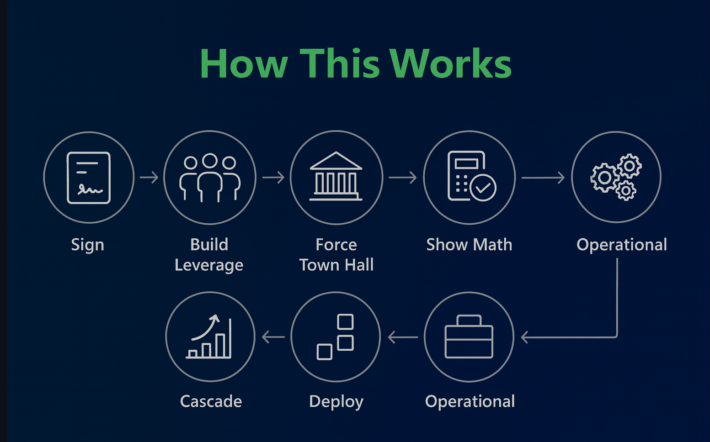
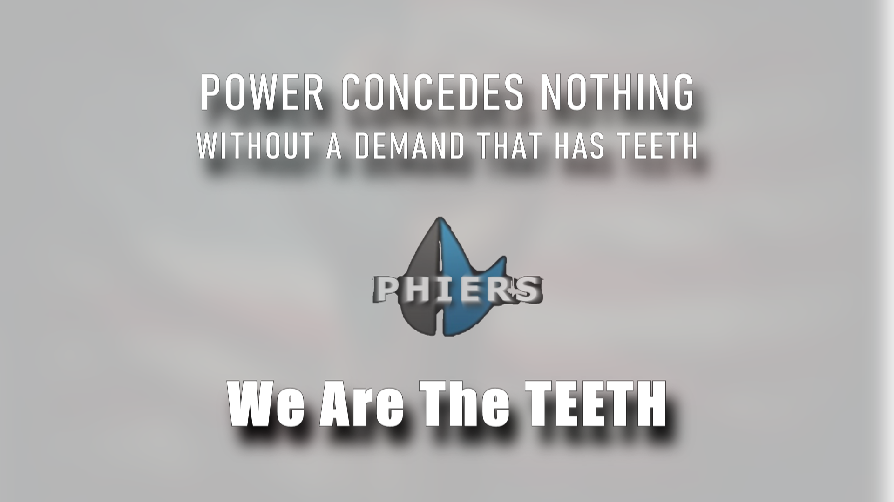

Black men built this.
Millions of us make it unstoppable.
This page is not persuasion. It is measurement.
UNSTOPPABLE is the moment when integrity becomes momentum.
When clarity becomes power.
When a national solution becomes a national movement.
UNBREAKABLE documented how PHIERS was built under pressure.
UNSTOPPABLE documents what happens next —
when millions of people move together with purpose, math, and undeniable democratic force.
We are not drifting.
We are choosing.
We are choosing to turn:
This is what democracy looks like
when the people who built it
decide to use it.
"PHIERS is no longer just a model.
It is a blueprint for how millions of people
can move together — peacefully, measurably,
and with undeniable democratic force."
Harvard researcher Erica Chenoweth studied 323 political campaigns across 106 years. Her finding:
No sustained, nonviolent campaign with 3.5% participation has ever failed.
That is 11.6 million people. We are building toward 100 million.
And once measured, it becomes usable.

The 3.5% threshold: 11.6 million organized people. No nonviolent campaign at this scale has ever failed.
This is not protest math. This is leverage math.
When 11.6 million organized people move in the same direction, Congress has two choices:
That accountability is the weapon. That accountability is the point.

One household shifts from $10,000 insurance to $600 telehealth — and the cascade begins.
This is not ideology. This is arithmetic.
And arithmetic does not care who is in office.
This is not a campaign with a single deadline.
It is a movement with three acts —
and the third act changes the country permanently.
March 28 is the No Kings Rally.
If we reach 3.5% before that date, the rally becomes a reckoning — not just a demonstration, but documented, measurable, organized proof that the people are ahead of their government.
PHIERS is the organized power behind No Kings. The rally is the visible proof of the math. Together, they are the leverage mechanism.
Every member of Congress will face a choice on March 29:
align with their constituents — or explain publicly why they refused.
July 4, 2026 is the 250th anniversary of America's founding documents.
One hundred million signatures is not rebellion. It is patriotism — peaceful, organized, undeniable.
On that day, we are not tearing anything down. We are practicing the very thing the founders wrote down: a people who can assemble, be heard, and correct course when their government drifts away from them.
On the 250th anniversary, we are not tearing anything down. We are finishing what was started.
ACT THREE is where the movement becomes the mandate.
This is where the movement becomes the mandate.
By November 2026, all 435 congressional districts will have candidates seeking PHIERS endorsement — not because of party loyalty, but because the people in their district have spoken.
PHIERS does not endorse parties.
PHIERS endorses accountability.
As each district reaches 1,500 verified signatures, the balance of power shifts — away from corruption, away from complicity, away from partisan gridlock — toward a government that is of, by, for, and accountable to the people.

Every district has a measurable threshold. Gray = 1,500+ verified signatures. Gold = endorsed.
When every district moves, the nation moves. That transition from local to national is not an abstraction — it is already visible.

National Participation Dashboard — from Not Yet Active to At Threshold, district by district.
Every candidate seeking PHIERS endorsement must:
This is not rebellion. This is renewal.
This is how the 99% reclaim a government that has drifted away from them — not through rage, not through chaos, but through math, discipline, and democratic force.

The roadmap. The sequence. The inevitability.
The signatures are not symbolic. They are proof — proof that people across this country want a system that finally works the way it was always supposed to.
We are demanding:
We are not asking for special treatment.
We are asking Congress to adopt a solution that already works —
or stand before their constituents and explain, on the record, why they won't.
This is the moment when storytellers choose whether they elevate solutions or avoid responsibility.
To the EGOT holders and the most decorated storytellers in the world — the invitation stands:
Use your platforms to elevate solutions that uplift humanity — not just narratives that entertain it.
We are not challenging you to conflict. We are challenging you to rise. To show that you see what BAFTA refused to see. To show that you understand the moment.
This is not confrontation. This is calibration. A chance to demonstrate integrity in a moment that demands it.
Before anyone knew the founders' story, a Fortune 500 PR firm reviewed PHIERS and staked their reputation on it. A second firm — UK-based, traded on the London Stock Exchange — independently confirmed the same findings.
"If we're talking to you right now, there is an available editorial window."
"If you weren't legit, we wouldn't risk putting our name behind yours."
"Major outlets are interested — Forbes, USA Today, International Business Times."
Nothing changed about PHIERS.
Not after hours of interviews.
Not after both reviews.
The math didn't change. The architecture didn't change. The national impact didn't change.
What changed was their understanding of who built it.
And the establishment's discomfort with a solution built by Black men that outperforms anything they could offer.
"Different institution.
Same pattern. Same silence.
Same discomfort with Black excellence
that disrupts the status quo."
Letter of support for PHIERS approach to healthcare stabilization.
Formal recognition of cooperative telehealth delivery model.
Multi-faith organizational support for community-based healthcare access.
Independent validation of cost-elimination model, operational since 2022.
Cooperative telehealth delivery for unions, gig workers, and veterans.
Chenoweth research: no movement reaching 3.5% participation has ever failed.
Pressure didn't break us. It revealed us.
PHIERS was not built in comfort. It was built under sustained pressure — the kind that reveals who people truly are.
At every point where compromise would have been easier, Black men building this made the same choice: keep building.
Financial & Legal
Personal & Physical
The Response
This is not a story of victimhood. It is a record of endurance.
PHIERS stands as measurable proof of capacity under pressure —
not symbolic capacity. Operational capacity.
And it proves, beyond any reasonable doubt,
that Black men — when we stand in our full capacity —
are inferior to no one.

"Power concedes nothing without a demand." — Frederick Douglass

We've got teeth. No kings.
PHIERS lowers costs.
Removes middlemen.
Simplifies systems that were complicated on purpose.
What it disrupts:
When control is threatened, pressure follows.
That is not emotion. That is how power behaves.
The resistance PHIERS faced was not personal. It was structural.
Structural resistance is the surest sign
that a solution is working exactly as designed.
PHIERS doesn't ask these systems to reform.
It renders their resistance irrelevant.
You don't have to do everything.
You just have to do something.
Every name is a signal. Every signal is data. Every data point is leverage.
Sign → Verify → Share → Recruit one person. That's the rhythm.
A ladder anyone can climb. Every rung matters.
This work has never felt like a career move. It has felt like a calling.
Not in a way that excludes anyone — but in the simple human sense that some work is bigger than any one person, and some ideas arrive before the world is ready for them.
PHIERS was built under pressure, but not by accident. The same force that kept Black men from breaking is the force that now invites millions of us to move together.
You don't have to share the founders' beliefs to feel it.
You just have to know what it feels like
when something is clearly right — and clearly overdue.
This solution was built without permission.
If it moves forward nationally — let it begin with us.
PHIERS was designed from the beginning to be handed to a democratically-led co-op — built with organizations committed to defending democracy and expanding access. Groups like the Working Families Party, Indivisible, MoveOn.org, Leaders We Deserve, and other grassroots networks are the natural stewards of what PHIERS becomes at scale.
The founders' role is not to be the face of this forever. The role is to research, architect, and build the framework — then help bring in the right people to lead it.
Your role is not to follow a leader.
Your role is to become one.
Founding membership begins with participation — not wealth.
Even one dollar is a declaration.
We stand behind what we build.
We do not wait to be validated.
We initiate. We steward. We deliver.
This is not charity. It is ownership.
We build. And the world benefits.

The cascade. The leverage. The handoff.
The proof exists.
The model works.
The only question left is participation.
UNBREAKABLE proved that integrity can survive pressure.
UNSTOPPABLE proves that integrity, multiplied by millions,
can reshape what is possible.
We are not waiting for permission.
We are not asking for a savior.
We are building, together, the future we wish someone had built for us.
"PHIERS is the blueprint.
The movement is the engine.
And when enough of us move together,
we are unstoppable."
The founders wrote it down 250 years ago.
We are living it now — organized, peaceful, mathematically unstoppable.
This is what democracy looks like
when the people who built it decide to use it.

100 million Americans. July 4, 2026. The 250th anniversary. This is the destination.
This is not a dream.
It is a deadline.
Want the full origin story?
Read UNBREAKABLE: The Solution They Couldn't Stop →